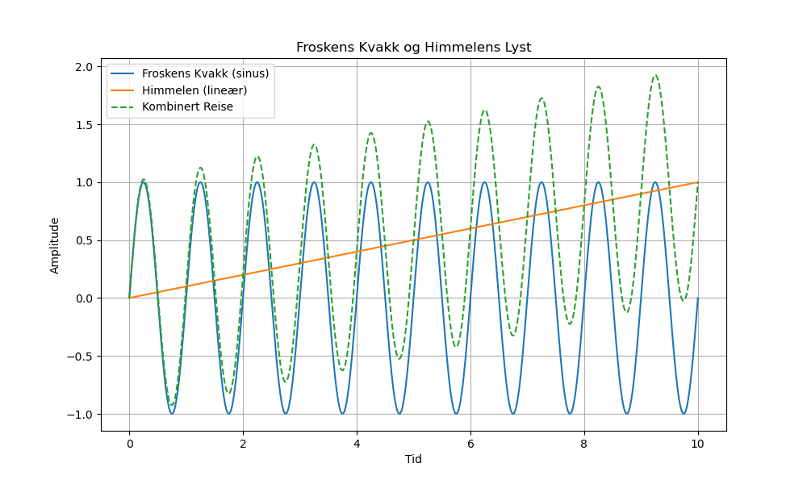

Dagens dikt
Frosken kvakker, himmelen lyser,
Hopp og plask, naturen fryser.
Fra dam til sky, veien er vid,
En iriserende reise, alltid strid.
Froskens kvakk blir en bølge i vann,
Fra null til uendelig sprer den seg an.
Med himmelens lyst — en kurve så ren,
Frosken blir matematikk, dens liv en scene.

Kode
import numpy as np
import matplotlib.pyplot as plt
# Matematisk representasjon av diktet
# Froskens kvakk som en sinusbølge
x = np.linspace(0, 10, 1000)
frogs_quack = np.sin(2 * np.pi * x)
# Himmelen som en lineær stigning
sky_light = x / 10
# Kombinasjon: Froskens reise gjennom naturens ordning
combined_curve = frogs_quack + sky_light
# Plotting av kurvene
plt.figure(figsize=(10, 6))
plt.plot(x, frogs_quack, label="Froskens Kvakk (sinus)")
plt.plot(x, sky_light, label="Himmelen (lineær)")
plt.plot(x, combined_curve, label="Kombinert Reise", linestyle='--')
plt.title("Froskens Kvakk og Himmelens Lyst")
plt.xlabel("Tid")
plt.ylabel("Amplitude")
plt.legend()
plt.grid(True)
plt.savefig('2025-03-20-19-44-09.png')